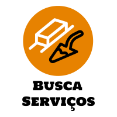

<ion-content id="container">
    
    <!-- <ion-searchbar placeholder="" animated></ion-searchbar><br><br><br> -->
    <div class="btn_opcao">
        <ion-button color="success" [routerLink]="['/servicos-prestador']">Serviços</ion-button>
    </div>
    <ion-label>Você é um prestador de serviço?</ion-label><br>
    <strong><ion-label [routerLink]="['/login']">Clique aqui</ion-label></strong>
<ion-content>